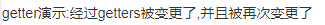

vuex中的getters类似vue的计算属性computed，且可以嵌套在一个getter中调用另一个getter
基于vue-cli的示例：
页面实际展示内容：

main.js
import Vue from 'vue'
import App from './App.vue'
import store from './store/vuexStore' //引入状态管理 store ,PS:名称只能是store,如变更会导致组件中无法获取到
new Vue({
store,//注册store(这可以把 store 的实例注入所有的子组件),PS:名称只能是store,如变更会导致组件中无法获取到
render: h => h(App)
}).$mount('#app')vuexStore.js vuex的定义，在main.js中import
import Vue from 'vue';
import Vuex from 'vuex'; //引入 vuex
Vue.use(Vuex); //使用 vuex
const state = {
// 初始化状态
stateData1:0
}
export default new Vuex.Store({
state:state,
getters: {//类似计算属性，返回值会根据它的依赖被缓存起来，且只有当它的依赖值发生了改变才会被重新计算
getterData1: state => {//接受第一个参数state
return state.stateData8+":经过getters被变更了"
},
getterData2: (state,getters) => {//接受第二个参数getters,并可通过其调用其他getter
return getters.getterData1+",并且被再次变更了"
}
},
})Example.vue getters同state一样，可以直接使用
<template>
<div>
{{this.$store.getters.getterData2}}
</div>
</template><script> //无需js </script>